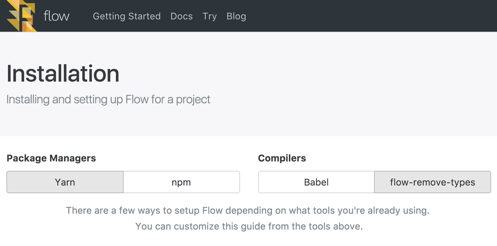
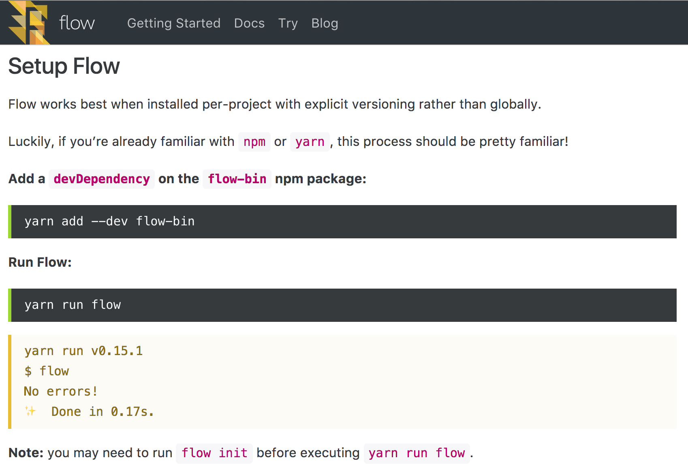

Flow 是什麼？
Flow 是由 Facebook 開發出來的一個型別檢查工具，是為了修補 JavaScript 弱型別的問題，使得在開發上大大提升程式碼的可讀性和可維護性。
這篇文章主要是為了記錄安裝 Flow 遇到的一些問題，以防未來老人痴呆什麼都不記得，隨著年齡增長，記性總是越來越差，廢話不多說，就開始吧。
Installation
這次發現 Flow 的官網改版之後其實變得好讀很多，沒有太多廢話的資訊，安裝步驟也很明確，基本上 Follow 官網的安裝步驟根本簡單上手。
Setup Compiler

很貼心的 Facebook 把兩種 Package management 的安裝步驟都分別列出了，只需要選擇你想要用的就好了，另外 Compiler 則分為兩種 Babel 和 flow-remove-types，Babel 應該是眾所皆知的用來轉換 JavaScript 語法的工具了，搭配上 flow 的 preset 就可以輕易的把 Flow type annotations 移除，而flow-remove-types 則是一個輕量級的工具，專為 Flow 設計用來移除 Flow type annotations，如果你的開發環境完全不需要用到 Babel 事實上選用 flow-remove-types 當作 compiler 會比較好。
Setup Flow

因為我是選擇 yarn 安裝，這裡遇到一個問題，最後的 Note 寫到 you may need to run flow init before executing yarn run flow. 但是如果你沒有把 flow 安裝在 global 根本就找不到 flow 這個指令，這邊有兩個選擇
將 flow-bin 安裝在 global 環境
yarn global add flow-bin接著再執行 flow 初始化
flow init因為 flow-bin 已經安裝在 local 了，所以其實可以直接執行初始化指令
yarn run flow init
以上就是簡單的 Flow 安裝，開始使用 Flow 進行開發吧！